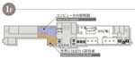

待兼山修学館展示場（旧史料準備館）1階

コンピュータの黎明期 Dawn of the Computer
阪大では、第二次世界大戦後まもなく真空管式コンピュータの研究と試作を始めました。その当時誕生したばかりの真空管式コンピュータと、時代の先駆を担った研究者たちを紹介しています。
世界にはばたく研究者 Researchers Active in the World
ノーベル物理学賞を受賞した湯川秀樹が、中間子論を着想した大阪大学物理学教室。当時、日本の科学の中心といわれた理学部の自由な研究環境、そこに関わりのある様々な研究者を紹介しています。
ミュージアムカフェ「坂」 Museum Cafe「SAKA」
[0]常設展示へ